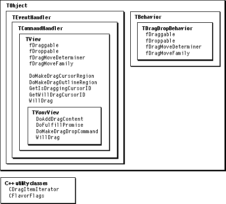

Recipes--Drag and Drop
The recipes and sample code in this section demonstrate how to include and initialize MacApp's drag-and-drop support, how to enable dragging or dropping for a view, and how to add drag-and-drop support to a custom view class.Figure 28-1 shows classes and methods used to provide drag-and-drop support in your application.
Figure 28-1 Drag-and-drop classes and methods

Recipe--Including and Initializing MacApp's Drag-and-Drop Support
To use MacApp's drag-and-drop support in your application, you perform these steps:
- Include MacApp's drag-and-drop code in your application.
- Call the InitUDragManager initialization routine.
Include MacApp's Drag-and-Drop Code in Your Application
MacApp uses theqDragcompiler flag to control compilation of drag-and-drop code. To include MacApp's drag-and-drop support, you need to set this flag toTRUE(or 1) while building your application. If you are using MPW and the MABuild system (described in Appendix A), you use a line like the following:MABuild "{MASamples}DemoText:DemoText" -Drag -AutoBuildThis line builds the DemoText sample application and the MacApp class library, with MacApp's drag-and-drop support included.If you are working with another development system, set the
qDragcompiler flag toTRUE(or 1) before compiling MacApp and your application. You can do so by placing a line like the following in a header file that is included by all files (both yours and MacApp's) that contain drag-related code:#define qDrag 1Call the InitUDragManager Initialization Routine
To initialize MacApp's drag-and-drop support, your application should call theInitUDragManagerroutine. You call this routine from yourmainroutine, with code similar to the following:#if qDrag if (HasDragManager()) InitUDragManager(); #endifMacApp supplies the HasDragManager routine to determine whether the Drag Manager is available on the current machine.
- IMPORTANT
- Isolate any code that deals with drag-and-drop support, using conditional compilation (#if qDrag) or conditional testing (if (HasDragManager)). Otherwise, your application may try to call MacApp code or reference a MacApp variable that was not included in the current build, with unpleasant results.

Recipe--Turning on Drag-and-Drop Support for a View
To turn on drag-and-drop support for a view, you perform this step:This recipe shows how to set view fields directly with accessor methods supplied by MacApp, and how to set them by adding a
- Set the view's drag-and-drop fields
TDragDropBehaviorclass to the view resource definition.The sample code shown in this recipe is for an arbitrary view class.
Setting Drag-and-Drop Fields Directly
You can set the drag-and-drop fields of a view class directly with code like the following:// Set fDraggable to TRUE, indicating the view can initiate drags. fYourView->SetDraggable(TRUE); // Set fDroppable to TRUE, indicating the view can accept drops. fYourView->SetDroppable(TRUE); // Set fDragMoveDeterminer to indicate that a drag between views within // this window should be treated as a move, not a copy. fYourView->SetDragMoveDeterminer(kMoveWithinWindow); // Set fDragMoveFamily to an arbitray value; dragging between any views // with this value is a move if the relationship specified by the // fDragMoveDeterminer field is also met. Using kNoIdentifier just // indicates that we don't want to define a special value. fYourView->SetDragMoveFamily(kNoIdentifier);The code in this sample specifies that the view object fYourView can initiate drags and can accept drops. If data is dragged from the fYourView object to another view within the same window that has a drag move family ofkNoIdentifier, the dragged data will be moved, not copied. (For more information on drag moves, see "Drag Copy Versus Drag Move," beginning on page 268.)You can set drag-and-drop fields in the initialization method for your view (IYourView). For a view class instantiated from a view resource definition, you can override the view's
DoPostCreatemethod and set the drag-and-drop fields there. Or you can use the approach shown in the next section.Setting Drag-and-Drop Fields Using the TDragDropBehavior Class
MacApp supplies theTDragDropBehaviorclass as a convenience for setting a view's drag-and-drop fields. TheTDragDropBehaviorclass has four fields that duplicate the identically named view fields:fDraggable,fDroppable,fDragMoveDeterminer, andfDragMoveFamily.When you call
AddBehaviorto add a behavior to a view, theAddBehaviormethod calls the behavior'sSetOwnermethod. TheSetOwnermethod forTDragDropBehaviorcalls the SetDraggable, SetDroppable, SetDragMoveDeterminer, and SetDragMoveFamily methods of its view to set the view's drag-and-drop fields to match those of the behavior.The advantage of the
TDragDropBehaviorclass is that you can use a view-editing application to add aTDragDropBehaviorobject to a view in a view resource definition. When your application usesNewTemplateWindowto create a view based on that definition, theTEventHandler::ReadFrommethod creates any behavior objects attached to the view and callsAddBehaviorfor each behavior object. As a result, theSetOwnermethod sets the view's drag-and-drop fields to match those of theTDragDropBehavior, which you specified in the view resource.Recipe--Adding Drag-and-Drop Support to a Custom
This recipe demonstrates how to add drag-and-drop support to a custom view class, using MacApp's
View ClassTPictureclass as an example. TheTPictureclass is a view class that displays a picture specified by itsfRsrcIDfield and itsfDataHandlefield. The resource ID identifies a resource of type'PICT', and the data handle field refers to a picture handle (typePicHandle).TPictureis a subclass ofTControl, so the displayed picture can be used as a button, if desired.To add drag-and-drop support to a custom view, you perform these steps:
The sample code shown in this recipe is based on MacApp's
- Define a subclass of
TViewor of one of MacApp's other view classes.- If the view will initiate drags, override certain methods:
- Override the
DoAddDragContentmethod to supply the view's draggable content.- If the
DoAddDragContentmethod promises any data, override theDoFulfillPromisemethod to supply the promised data.- If the view will accept drops, override the
WillAcceptDropmethod.- Override the
DoMakeDragDropCommandmethod.- Include and initialize MacApp's drag-and-drop support.
- Turn on dragging or dropping for the view.
- If MacApp's default drag-and-drop behavior is not sufficient, you may have to override additional methods:
- Override the
WillDragmethod.- Override
DoMakeDragCursorRegionorDoMakeDropHiliteRegion.- Override
DoMakeDragOutlineRegion.- Override methods to set the drag cursor.
TPictureclass.Define a Subclass of TView or Another View Class
This recipe assumes that you have defined a custom view class. For more information on defining a class, see "Recipe--Defining a Class," beginning on page 277, and "Recipe--Defining a Subclass of TApplication," beginning on page 289. MacApp'sTPictureclass is defined in the filesUDialog.handUDialog.cp.For a View That Initiates Drags, Override Certain Methods
This section describes twoTViewmethods your custom view class is likely to override to provide drag support:DoAddDragContentandDoFulfillPromise.DoAddDragContent
TheTView::HandleDragmethod callsDoAddDragContentto add content for a drag operation. InTView,DoAddDragContentdoes nothing, so your custom view must override this method to supply its draggable content.The
TPictureclass overrides DoAddDragContent to promise picture data for the drag operation (see "Promising Data," beginning on page 267):void TPicture::DoAddDragContent() { TDragItem * dragItem = TDragDropSession::fgDragDropSession->AddDragItem(1); CFlavorFlags flags; dragItem->PromiseFlavor('PICT', flags); }The DoAddDragContent method first calls a method of the global drag session object to add a drag item to the drag operation. The passed value (1) is an arbitrary value used as an item reference in subsequent calls to Drag Manager routines involving this item. DoAddDragContent then calls the drag item'sPromiseFlavormethod to make a promise to deliver'PICT'data on request.When a drag operation is initiated by a user, the dragged data may eventually be dropped or the drag may be ended without delivering any data. The dragged data, such as a picture handle, may be large, so it is worthwhile to promise data for future delivery, rather than actually supply it. The next section describes how to deliver promised data when it is needed.
DoFulfillPromise
If your custom view class promises data in its DoAddDragContent method, asTPicturedoes, it must overrideDoFulfillPromiseto supply the promised data.void TPicture::DoFulfillPromise(TDragItem* promisedItem) { switch(promisedItem->GetFlavorType()) { case 'PICT': { if (IsAResource((Handle)fDataHandle)) LoadResource((Handle)fDataHandle); FailNIL(fDataHandle); FailNIL(*fDataHandle); MAVolatileInit(SignedByte, savedState, HGetState((Handle)fDataHandle)); FailInfo fi; Try(fi) { HNoPurge((Handle)fDataHandle); promisedItem->SetDataFromHandle((Handle)fDataHandle); HSetState((Handle)fDataHandle, savedState); fi.Success(); } else { HSetState((Handle)fDataHandle, savedState); fi.ReSignal(); } } break; default: Inherited::DoFulfillPromise(promisedItem); break; } }The TPicture::DoFulfillPromise method is passed a drag item that knows what type of information has been promised. If the promised flavor is'PICT', DoFulfillPromise first makes sure the resource handle for the picture is loaded and, if so, marks it as not purgeable. It then calls a method of the drag item (SetDataFromHandle) to supply the promised data. DoFulfillPromise includes failure-handling code to restore the state of the picture handle if any error occurs. If the promised type is anything other than'PICT', it calls Inherited to pass on the request.For a View That Accepts Drops, Override the WillAcceptDrop Method
When a user drags information over your custom view during a drag operation, theTWindow::MouseToDropTargetmethod calls your view'sWillAcceptDropmethod to determine whether the view can accept the dragged data. A view normally accepts a drop only if it can accept at least one flavor for each drag item in the drag operation. TheTPicture::WillAcceptDropmethod accepts the drop only if there is exactly one drag item and it contains the'PICT'flavor.Boolean TPicture::WillAcceptDrop(CDragItemIterator& dragItemIterator) { if (TDragDropSession::fgDragDropSession->GetItemCount() != 1) return FALSE; TDragItem *firstItem = dragItemIterator.FirstDragItem(); return firstItem->FlavorExists('PICT'); }The WillAcceptDrop method calls on a method of the global drag session object to get the number of items in the current drag. If the number of items is not one, or if the first drag item does not contain (or promise for future delivery) the flavor'PICT', WillAcceptDrop returns FALSE; otherwise, it returnsTRUE.Override the DoMakeDragDropCommand Method
Two methods of the global drag session object,DragReceiveHandlerandHandleDragToTrash, call the view'sDoMakeDragDropCommandmethod. TheDoMakeDragDropCommandmethod supplies a command object to perform the operation: drag, drop, or drag move (specified by the command constantscDrag,cDrop, andcDragMove). TheDoMakeDragDropCommandmethod for theTPictureclass is shown on the following page.TCommand* TPicture::DoMakeDragDropCommand(CommandNumber itsCommandNumber, CDragItemIterator&dragItemIterator) { TCommand *returnCommand = NULL; TCommandHandler *itsContext = this->GetContext(itsCommandNumber); switch(itsCommandNumber) { case cDrag: { TPictureCommand *dragCommand = new TPictureCommand; dragCommand->IPictureCommand(kNoResource, NULL, this, itsCommandNumber, itsContext, kCanUndo, kCausesChange, itsContext); returnCommand = dragCommand; } break; case cDrop: { HandlepictureHandle = NULL; TDragItem*firstItem = dragItemIterator.FirstDragItem(); firstItem->FocusOnFlavor('PICT'); pictureHandle = firstItem->GetDataAsHandle(); TPictureCommand *dropCommand = new TPictureCommand; dropCommand->IPictureCommand(kNoResource,(PicHandle)pictureHandle, this, itsCommandNumber, itsContext, kCanUndo, kCausesChange, itsContext); returnCommand = dropCommand; } break; case cDragMove: // Does nothing--causes return value to be NULL. break; default: returnCommand = Inherited::DoMakeDragDropCommand( itsCommandNumber, dragItemIterator); break; } return returnCommand; }TheTPicture::DoMakeDragDropCommandmethod makes the same kind of command, aTPictureCommand, for a drag or a drop. For a drag move it does nothing.In the case of a drag, the
- IMPORTANT
- The
DoMakeDragDropCommandmethod is the one and only opportunity for the target view to extract data from the drag session. Don't assume you can extract data at any later point.DoMakeDragDropCommandmethod initializes a picture command object with the valueskNoResourceandNULLfor the picture resource ID andPicHandle. TheDoItmethod forTPictureCommandsets the view's resource ID andPicHandlefields to the stored values, in effect zeroing out the picture. As a result, dragging from aTPictureview is always the equivalent of a cut operation.In the case of a drop, the
DoMakeDragDropCommandmethod initializes a picture command object in a slightly different way--instead of specifyingNULLfor thePicHandle, it passes the picture handle from the current view (theTPictureor other view from which the data for the drop is being dragged). TheDoItmethod forTPictureCommandsets the view'sPicHandlefield to the passed picture handle, in effect dropping in the picture data.Since a drag from a
TPictureview cannot be dropped in the same view, there is no need forDoMakeDragDropCommandto supply a special command for a drag move.Include and Initialize MacApp's Drag-and-Drop Support
To use MacApp's drag-and-drop support in your custom view, your application must build with drag-and-drop support and initialize it. Those tasks are described in "Recipe--Including and Initializing MacApp's Drag-and-Drop Support," beginning on page 608.Turn on Dragging or Dropping for the View
For your custom view to initiate drags or accept drops, you must set the appropriate drag-and-drop fields. "Recipe--Turning on Drag-and-Drop Support for a View," beginning on page 610, describes how to turn on dragging or dropping for a view.Override Additional Methods
For some custom views, including MacApp'sTPicture, the previous steps are sufficient to provide drag-and-drop support. However, other views may find it necessary to override additional drag-and-drop methods ofTView.WillDrag
TheTView::HandleMouseDownmethod calls theDoMakeDragCursorRegionmethod (described in the next section) and theWillDragmethod to determine whether a view can initiate a drag. In theTViewclass,DoMakeDragCursorRegioncreates a region that is equal to the view's extent.TView::WillDragreturnsTRUEif the current mouse location is within the drag region and thefDraggablefield has the valueTRUE.If your view requires different or additional handling, it can override
WillDrag. TheTPictureclass overridesWillDragto ensure that the view has picture data to drag:Boolean TPicture::WillDrag(const VPoint& localMouse, const RgnHandledragCursorRegion) { if (Inherited::WillDrag(localMouse, dragCursorRegion)) return ((fDataHandle != NULL) || (fRsrcID != kNoResource)); else return FALSE; }This method first callsInheritedto determine whether the mouse location is in the drag region and whether the view supports dragging. If so, and if the picture view has either aPicHandle(fDataHandle != NULL) or a picture resource ID (fRsrcID != kNoResource), WillDrag returnsTRUE; otherwise, it returns FALSE.Override the DoMakeDragCursorRegion or DoMakeDropHiliteRegion Method
TheTView::DoMakeDragCursorRegionmethod creates a region to describe the specific portion of the view's content that is draggable. Draggable content is often the area within the view that the user perceives as selected, such as highlighted cells in a grid view or selected text in a text view. TheDoMakeDragCursorRegionmethod is called by theTViewmethodsHandleMouseDown,DoSetDragCursor, andDoMakeDragOutlineRegion.In the
TViewclass,DoMakeDragCursorRegioncalls theDoMakeDropHiliteRegionmethod, which creates a region that matches the view's extent. TheDoMakeDropHiliteRegionmethod is also called by the global drag session object'sShowDropTargetHilitemethod when setting a drop target.As a result, your application has several options if it needs to modify any of the drag-and-drop regions supplied by the
TViewclass:The
- Override
DoMakeDragCursorRegion. Here the region you supply will be used to determine the area for which the drag cursor should be set, to determine when a drag should be initiated, and to supply a drag outline.- Override
DoMakeDropHiliteRegion. Here the region you supply will be used in all the places a region supplied byDoMakeDragCursorRegionis used, and it will be used to highlight a region that is ready to accept a drop.TGridViewview class, for example, overridesDoMakeDragCursorRegionto create a drag region that includes all selected cells in the gridview.The
TEditTextview class overridesDoMakeDropHiliteRegionto provide a region that is inset by 1 pixel to compensate for a border area.Override the DoMakeDragOutlineRegion Method
In theTViewclass, theDoMakeDragOutlineRegionmethod calls on theDoMakeDragCursorRegionmethod, so the drag outline region matches the drag cursor region, which matches the view's extent. If your custom view class needs a specialized drag region (for example, if the drag outline region, drag cursor region, and view's extent are not identical), it can override theDoMakeDragOutlineRegionmethod.Setting the Drag Cursor
The default behavior supplied by theTViewclass is to display an open-hand cursor when a drag can be initiated, and a closed-hand cursor when a drag is under way. This behavior is appropriate for dragging data such as a picture.Classes such as
TTEViewandTEditTextoverride theGetWillDragCursorIDmethod to return thekNoResourceID constant. This results in the display of an arrow cursor--an image appropriate for dragging text--when a drag can be initiated. These classes also override theGetIsDraggingCursorIDmethod to returnkNoResource, so that the arrow cursor is also used during the actual drag operation.Your view class can also override these methods to specify a particular cursor when a drag can be initiated or when a drag is actually in progress. For more information, see "Setting the Drag Cursor," beginning on page 257.